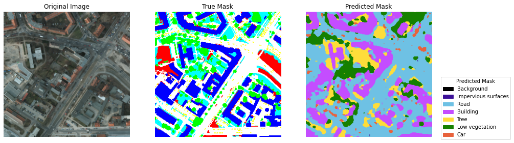
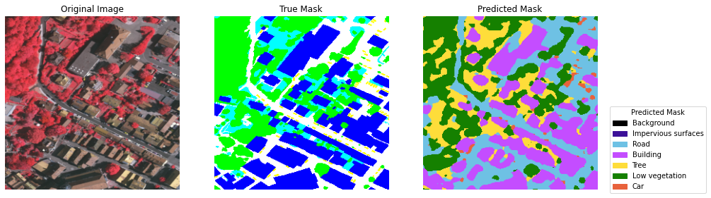
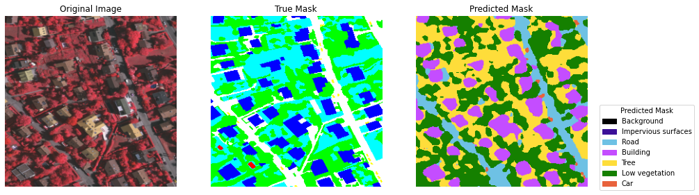
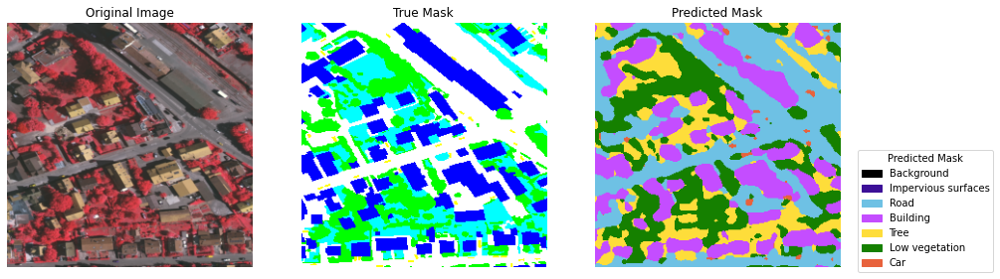
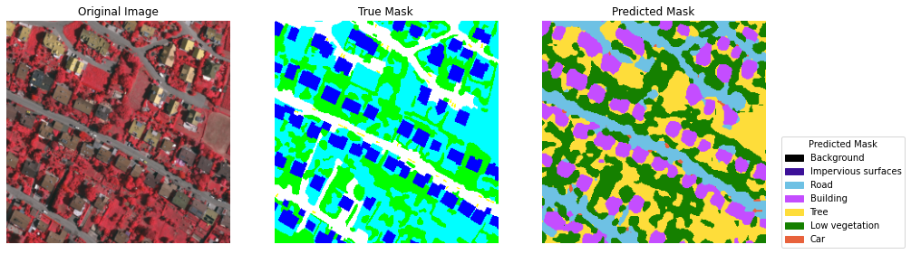
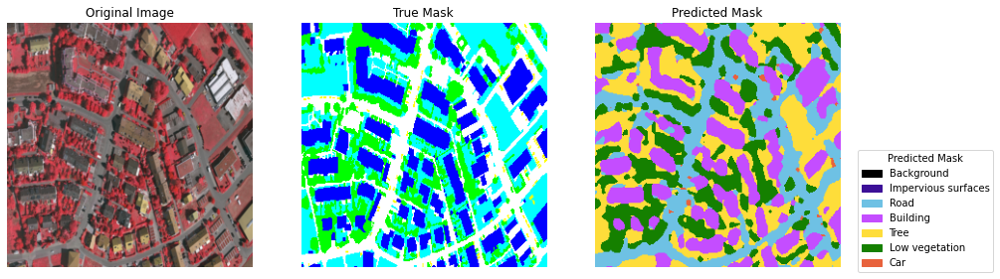
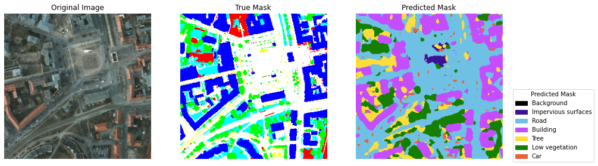
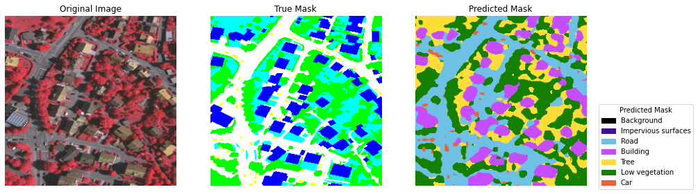
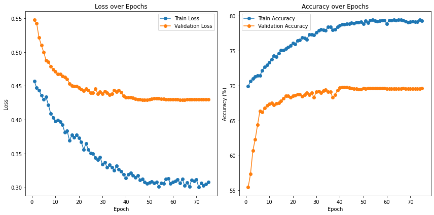

...:
...: # Define directory paths
...: potsdam_img_dir = r'C:\Users\ce841228\Documents\Dissertation\DataSet\Potsdam\Images'
...: potsdam_mask_dir = r'C:\Users\ce841228\Documents\Dissertation\DataSet\Potsdam\Labels'
...: vaihingen_img_dir = r'C:\Users\ce841228\Documents\Dissertation\DataSet\Vaihingen\Images'
...: vaihingen_mask_dir = r'C:\Users\ce841228\Documents\Dissertation\DataSet\Vaihingen\Labels'
...:
...: # Define segmentation classes and colors
...: seg_classes = ["Background", "Impervious surfaces", "Road", "Building", "Tree", "Low vegetation", "Car"]
...: true_color_rgb = [(0, 0, 0), (255, 0, 0), (255, 255, 255), (0, 0, 255), (0, 255, 255), (0, 255, 0), (255, 255, 0)]
...:
...: pred_color_rgb = [(0, 0, 0), (60, 16, 152), (110, 193, 228), (196, 77, 255), (254, 221, 58), (21, 128, 0), (232, 98, 60)]
...:
...: ISPRS_colors = pd.DataFrame(data={"Classes": seg_classes, "Color_RGB": true_color_rgb})
...: print(ISPRS_colors)
...:
...: def rgb_to_class(mask, color_map):
...: mask_class = np.zeros(mask.shape[:2], dtype=np.uint8)
...: for i, color in enumerate(color_map):
...: mask_class[np.all(mask == color, axis=-1)] = i
...: return mask_class
...:
...: def class_to_rgb(mask_class, color_map):
...: mask_rgb = np.zeros((*mask_class.shape, 3), dtype=np.uint8)
...: for i, color in enumerate(color_map):
...: mask_rgb[mask_class == i] = color
...: return mask_rgb
...:
...: class PotsdamVaihingenDataset(Dataset):
...: def __init__(self, image_dir, mask_dir=None, transform=None, labeled=True, color_map=None, target_size=(256, 256)):
...: self.image_dir = image_dir
...: self.mask_dir = mask_dir
...: self.transform = transform
...: self.labeled = labeled
...: self.color_map = color_map
...: self.target_size = target_size
...: self.images = sorted(os.listdir(image_dir))
...: if self.labeled:
...: self.masks = sorted(os.listdir(mask_dir))
...: else:
...: self.masks = None
...:
...: def __len__(self):
...: return len(self.images)
...:
...: def __getitem__(self, idx):
...: img_path = os.path.join(self.image_dir, self.images[idx])
...: image = Image.open(img_path).convert("RGB")
...: if self.labeled:
...: mask_path = os.path.join(self.mask_dir, self.masks[idx])
...: mask = Image.open(mask_path)
...: mask = mask.resize(self.target_size, Image.NEAREST)
...: mask = np.array(mask)
...: mask = rgb_to_class(mask, self.color_map)
...: mask = torch.tensor(mask, dtype=torch.long)
...: if self.transform:
...: image = self.transform(image)
...: return image, mask
...: else:
...: if self.transform:
...: image = self.transform(image)
...: return image
...:
...: def get_transform():
...: return transforms.Compose([
...: transforms.Resize((256, 256)),
...: transforms.ToTensor(),
...: ])
...:
...: # Define the DeepLabV3+ model with ResNet-101 backbone
...: class DeepLabV3PlusModel(nn.Module):
...: def __init__(self, num_classes):
...: super(DeepLabV3PlusModel, self).__init__()
...: self.model = DeepLabV3Plus(
...: encoder_name="resnet101",
...: encoder_weights="imagenet",
...: in_channels=3,
...: classes=num_classes,
...: activation=None
...: )
...:
...: def forward(self, x):
...: return self.model(x)
...:
...: def calculate_metrics(pred, target, num_classes):
...: pred_flat = pred.flatten()
...: target_flat = target.flatten()
...:
...: precision = precision_score(target_flat, pred_flat, average='macro', zero_division=0) * 100
...: recall = recall_score(target_flat, pred_flat, average='macro', zero_division=0) * 100
...: f1 = f1_score(target_flat, pred_flat, average='macro', zero_division=0) * 100
...: iou = jaccard_score(target_flat, pred_flat, average='macro') * 100
...:
...: return precision, recall, f1, iou
...:
...: def train_one_epoch(model, dataloader, criterion, optimizer, device, num_classes):
...: model.train()
...: total_loss = 0
...: correct = 0
...: total = 0
...: total_precision, total_recall, total_f1, total_iou = 0, 0, 0, 0
...:
...: for img_labeled, mask_labeled in dataloader:
...: img_labeled, mask_labeled = img_labeled.to(device), mask_labeled.to(device)
...:
...: optimizer.zero_grad()
...:
...: # Forward pass
...: pred = model(img_labeled)
...: loss = criterion(pred, mask_labeled)
...:
...: # Backward pass and optimization
...: loss.backward()
...: optimizer.step()
...:
...: total_loss += loss.item()
...:
...: pred_classes = torch.argmax(pred, dim=1)
...: correct += (pred_classes == mask_labeled).sum().item()
...: total += mask_labeled.numel()
...:
...: precision, recall, f1, iou = calculate_metrics(pred_classes.cpu().numpy(), mask_labeled.cpu().numpy(), num_classes)
...: total_precision += precision
...: total_recall += recall
...: total_f1 += f1
...: total_iou += iou
...:
...: accuracy = correct / total * 100
...: avg_precision = total_precision / len(dataloader)
...: avg_recall = total_recall / len(dataloader)
...: avg_f1 = total_f1 / len(dataloader)
...: avg_iou = total_iou / len(dataloader)
...:
...: return total_loss / len(dataloader), accuracy, avg_precision, avg_recall, avg_f1, avg_iou
...:
...: def validate(model, dataloader, criterion, device, num_classes):
...: model.eval()
...: total_loss = 0
...: correct = 0
...: total = 0
...: total_precision, total_recall, total_f1, total_iou = 0, 0, 0, 0
...:
...: with torch.no_grad():
...: for img, mask in dataloader:
...: img, mask = img.to(device), mask.to(device)
...: output = model(img)
...: loss = criterion(output, mask)
...: total_loss += loss.item()
...:
...: pred_classes = torch.argmax(output, dim=1)
...: correct += (pred_classes == mask).sum().item()
...: total += mask.numel()
...:
...: precision, recall, f1, iou = calculate_metrics(pred_classes.cpu().numpy(), mask.cpu().numpy(), num_classes)
...: total_precision += precision
...: total_recall += recall
...: total_f1 += f1
...: total_iou += iou
...:
...: accuracy = correct / total * 100
...: avg_precision = total_precision / len(dataloader)
...: avg_recall = total_recall / len(dataloader)
...: avg_f1 = total_f1 / len(dataloader)
...: avg_iou = total_iou / len(dataloader)
...:
...: return total_loss / len(dataloader), accuracy, avg_precision, avg_recall, avg_f1, avg_iou
...:
...: def test(model, dataloader, criterion, device, num_classes):
...: model.eval()
...: total_loss = 0
...: correct = 0
...: total = 0
...: total_precision, total_recall, total_f1, total_iou = 0, 0, 0, 0
...:
...: with torch.no_grad():
...: for img, mask in dataloader:
...: img, mask = img.to(device), mask.to(device)
...: output = model(img)
...: loss = criterion(output, mask)
...: total_loss += loss.item()
...:
...: pred_classes = torch.argmax(output, dim=1)
...: correct += (pred_classes == mask).sum().item()
...: total += mask.numel()
...:
...: precision, recall, f1, iou = calculate_metrics(pred_classes.cpu().numpy(), mask.cpu().numpy(), num_classes)
...: total_precision += precision
...: total_recall += recall
...: total_f1 += f1
...: total_iou += iou
...:
...: accuracy = correct / total * 100
...: avg_precision = total_precision / len(dataloader)
...: avg_recall = total_recall / len(dataloader)
...: avg_f1 = total_f1 / len(dataloader)
...: avg_iou = total_iou / len(dataloader)
...:
...: return total_loss / len(dataloader), accuracy, avg_precision, avg_recall, avg_f1, avg_iou
...:
...: def visualize_predictions(model, dataloader, true_color_map, pred_color_map, device):
...: model.eval()
...: with torch.no_grad():
...: for img, mask in dataloader:
...: img = img.to(device)
...: pred = model(img)
...: pred_class = torch.argmax(pred, dim=1).cpu().numpy()
...: img = img.cpu().numpy().transpose(0, 2, 3, 1)
...: mask = mask.cpu().numpy()
...: pred_rgb = [class_to_rgb(pc, pred_color_map) for pc in pred_class]
...: true_rgb = [class_to_rgb(mc, true_color_map) for mc in mask]
...:
...: for i in range(len(img)):
...: plt.figure(figsize=(15, 5))
...: plt.subplot(1, 3, 1)
...: plt.imshow(img[i])
...: plt.title("Original Image")
...: plt.axis("off")
...: plt.subplot(1, 3, 2)
...: plt.imshow(true_rgb[i])
...: plt.title("True Mask")
...: plt.axis("off")
...: plt.subplot(1, 3, 3)
...: plt.imshow(pred_rgb[i])
...: plt.title("Predicted Mask")
...: plt.axis("off")
...:
...: handles_true = [plt.Rectangle((0, 0), 1, 1, color=np.array(c) / 255.0) for c in true_color_map]
...: handles_pred = [plt.Rectangle((0, 0), 1, 1, color=np.array(c) / 255.0) for c in pred_color_map]
...: labels = seg_classes
...: plt.legend(handles_true, labels, title="True Mask", bbox_to_anchor=(1.05, 1), loc='upper left')
...: plt.legend(handles_pred, labels, title="Predicted Mask", bbox_to_anchor=(1.05, 0.5), loc='upper left')
...:
...: plt.show()
...:
...: def plot_results(train_losses, train_accuracies, val_losses, val_accuracies):
...: epochs = list(range(1, len(train_losses) + 1))
...:
...: plt.figure(figsize=(12, 6))
...:
...: # Plot loss
...: plt.subplot(1, 2, 1)
...: plt.plot(epochs, train_losses, marker='o', label='Train Loss')
...: plt.plot(epochs, val_losses, marker='o', label='Validation Loss')
...: plt.title('Loss over Epochs')
...: plt.xlabel('Epoch')
...: plt.ylabel('Loss')
...: plt.legend()
...:
...: # Plot accuracy
...: plt.subplot(1, 2, 2)
...: plt.plot(epochs, train_accuracies, marker='o', label='Train Accuracy')
...: plt.plot(epochs, val_accuracies, marker='o', label='Validation Accuracy')
...: plt.title('Accuracy over Epochs')
...: plt.xlabel('Epoch')
...: plt.ylabel('Accuracy (%)')
...: plt.legend()
...:
...: plt.tight_layout()
...: plt.show()
...:
...: def main():
...: global device
...: device = torch.device('cuda' if torch.cuda.is_available() else 'cpu')
...:
...: # Combine Potsdam and Vaihingen datasets
...: potsdam_dataset = PotsdamVaihingenDataset(potsdam_img_dir, potsdam_mask_dir, transform=get_transform(), color_map=true_color_rgb)
...: vaihingen_dataset = PotsdamVaihingenDataset(vaihingen_img_dir, vaihingen_mask_dir, transform=get_transform(), color_map=true_color_rgb)
...: full_dataset = ConcatDataset([potsdam_dataset, vaihingen_dataset])
...:
...: # Split the combined dataset into train, validation, and test sets
...: train_size = int(0.7 * len(full_dataset))
...: val_size = int(0.15 * len(full_dataset))
...: test_size = len(full_dataset) - train_size - val_size
...: train_dataset, val_dataset, test_dataset = random_split(full_dataset, [train_size, val_size, test_size])
...:
...: # Dataloaders
...: batch_size = 32
...: train_loader = DataLoader(train_dataset, batch_size=batch_size, shuffle=True)
...: val_loader = DataLoader(val_dataset, batch_size=batch_size, shuffle=False)
...: test_loader = DataLoader(test_dataset, batch_size=batch_size, shuffle=False)
...:
...: # Model
...: num_classes = len(seg_classes)
...: model = DeepLabV3PlusModel(num_classes=num_classes).to(device)
...:
...: # Criterion (Use Dice Loss or IoU Loss)
...: criterion = losses.DiceLoss(mode='multiclass')
...:
...: # Optimizer with Learning Rate Scheduler
...: optimizer = optim.Adam(model.parameters(), lr=1e-4)
...: scheduler = optim.lr_scheduler.ReduceLROnPlateau(optimizer, 'min', patience=3, factor=0.1, verbose=True)
...:
...: # Hyperparameter Tuning using Bayesian Optimization
...: def objective_function(lr, weight_decay):
...: optimizer.param_groups[0]['lr'] = lr
...: optimizer.param_groups[0]['weight_decay'] = weight_decay
...:
...: # Perform one epoch of training and validation
...: train_loss, _, _, _, _, _ = train_one_epoch(model, train_loader, criterion, optimizer, device, num_classes)
...: val_loss, _, _, _, _, _ = validate(model, val_loader, criterion, device, num_classes)
...:
...: return -val_loss # Maximizing negative validation loss means minimizing validation loss
...:
...: pbounds = {'lr': (1e-5, 1e-3),'weight_decay': (1e-5, 1e-3)}
...:
...: optimizer_bayes = BayesianOptimization(f=objective_function, pbounds=pbounds, random_state=42, verbose=2)
...:
...: optimizer_bayes.maximize(init_points=5, n_iter=20)
...:
...: # Apply the best hyperparameters
...: best_hps = optimizer_bayes.max['params']
...: optimizer.param_groups[0]['lr'] = best_hps['lr']
...: optimizer.param_groups[0]['weight_decay'] = best_hps['weight_decay']
...: print(f"Best Hyperparameters: {best_hps}")
...:
...: # Training loop
...: num_epochs = 75
...: train_losses, train_accuracies, train_precisions, train_recalls, train_f1s, train_ious = [], [], [], [], [], []
...: val_losses, val_accuracies, val_precisions, val_recalls, val_f1s, val_ious = [], [], [], [], [], []
...:
...: for epoch in range(num_epochs):
...: start_time = time.time()
...: train_loss, train_acc, train_prec, train_recall, train_f1, train_iou = train_one_epoch(model, train_loader, criterion, optimizer, device, num_classes)
...: val_loss, val_acc, val_prec, val_recall, val_f1, val_iou = validate(model, val_loader, criterion, device, num_classes)
...: scheduler.step(val_loss)
...: epoch_time = time.time() - start_time
...:
...: train_losses.append(train_loss)
...: train_accuracies.append(train_acc)
...: train_precisions.append(train_prec)
...: train_recalls.append(train_recall)
...: train_f1s.append(train_f1)
...: train_ious.append(train_iou)
...:
...: val_losses.append(val_loss)
...: val_accuracies.append(val_acc)
...: val_precisions.append(val_prec)
...: val_recalls.append(val_recall)
...: val_f1s.append(val_f1)
...: val_ious.append(val_iou)
...:
...: print(f'Epoch {epoch + 1}/{num_epochs}, Time: {epoch_time:.2f}s, '
...: f'Train Loss: {train_loss:.4f}, Train Accuracy: {train_acc:.2f}%, '
...: f'Val Loss: {val_loss:.4f}, Val Accuracy: {val_acc:.2f}%, '
...: f'Precision: {val_prec:.2f}%, Recall: {val_recall:.2f}%, F1-Score: {val_f1:.2f}%, IoU: {val_iou:.2f}%')
...:
...: # Test the model
...: test_loss, test_acc, test_prec, test_recall, test_f1, test_iou = test(model, test_loader, criterion, device, num_classes)
...: print(f'Test Loss: {test_loss:.4f}, Test Accuracy: {test_acc:.2f}%, '
...: f'Precision: {test_prec:.2f}%, Recall: {test_recall:.2f}%, F1-Score: {test_f1:.2f}%, IoU: {test_iou:.2f}%')
...:
...: # Visualize predictions on validation set
...: visualize_predictions(model, val_loader, true_color_rgb, pred_color_rgb, device)
...:
...: # Plot the results
...: plot_results(train_losses, train_accuracies, val_losses, val_accuracies)
...:
...: if __name__ == '__main__':
...: main()
All packages are successfully imported!
GPU is being used
Classes Color_RGB
0 Background (0, 0, 0)
1 Impervious surfaces (255, 0, 0)
2 Road (255, 255, 255)
3 Building (0, 0, 255)
4 Tree (0, 255, 255)
5 Low vegetation (0, 255, 0)
6 Car (255, 255, 0)
C:\ProgramData\anaconda3\envs\c39tf\lib\site-packages\torch\optim\lr_scheduler.py:60: UserWarning: The verbose parameter is deprecated. Please use get_last_lr() to access the learning rate.
warnings.warn(
| iter | target | lr | weight... |
-------------------------------------------------
| 1 | -0.7476 | 0.0003808 | 0.0009512 |
| 2 | -0.7468 | 0.0007347 | 0.0006027 |
| 3 | -0.7463 | 0.0001645 | 0.0001644 |
| 4 | -0.7459 | 6.75e-05 | 0.0008675 |
| 5 | -0.7445 | 0.0006051 | 0.000711 |
| 6 | -0.7427 | 0.0006148 | 0.0007117 |
| 7 | -0.74 | 0.0006196 | 0.0007195 |
| 8 | -0.7362 | 0.0006311 | 0.0007227 |
| 9 | -0.73 | 0.0006455 | 0.0007379 |
| 10 | -0.7254 | 0.0006839 | 0.0007538 |
| 11 | -0.7227 | 0.0006767 | 0.0008155 |
| 12 | -0.7171 | 0.00075 | 0.0008416 |
| 13 | -0.7133 | 0.000738 | 0.0009228 |
| 14 | -0.7113 | 0.0008322 | 0.0009295 |
| 15 | -0.7081 | 0.0007958 | 0.001 |
| 16 | -0.6927 | 0.0009325 | 0.001 |
| 17 | -0.6756 | 0.001 | 0.000943 |
| 18 | -0.6661 | 0.001 | 0.0008436 |
| 19 | -0.6518 | 0.001 | 0.0007297 |
| 20 | -0.654 | 0.001 | 0.00061 |
| 21 | -0.6493 | 0.001 | 0.0004242 |
| 22 | -0.629 | 0.001 | 0.0002442 |
| 23 | -0.6068 | 0.001 | 7.111e-05 |
| 24 | -0.5956 | 0.0008458 | 5.7e-05 |
| 25 | -0.5609 | 0.0006813 | 1e-05 |
=================================================
Best Hyperparameters: {'lr': 0.0006812790639536787, 'weight_decay': 1e-05}
Epoch 1/75, Time: 114.02s, Train Loss: 0.4573, Train Accuracy: 69.89%, Val Loss: 0.5478, Val Accuracy: 55.44%, Precision: 43.88%, Recall: 39.00%, F1-Score: 38.35%, IoU: 27.25%
Epoch 2/75, Time: 114.68s, Train Loss: 0.4472, Train Accuracy: 70.69%, Val Loss: 0.5427, Val Accuracy: 57.34%, Precision: 45.41%, Recall: 39.66%, F1-Score: 38.68%, IoU: 27.73%
Epoch 3/75, Time: 114.65s, Train Loss: 0.4439, Train Accuracy: 71.02%, Val Loss: 0.5218, Val Accuracy: 60.70%, Precision: 44.93%, Recall: 41.66%, F1-Score: 41.22%, IoU: 30.14%
Epoch 4/75, Time: 115.09s, Train Loss: 0.4362, Train Accuracy: 71.28%, Val Loss: 0.5100, Val Accuracy: 62.32%, Precision: 45.92%, Recall: 42.57%, F1-Score: 42.18%, IoU: 31.09%
Epoch 5/75, Time: 114.53s, Train Loss: 0.4299, Train Accuracy: 71.47%, Val Loss: 0.5001, Val Accuracy: 64.39%, Precision: 45.70%, Recall: 43.76%, F1-Score: 43.23%, IoU: 32.26%
Epoch 6/75, Time: 98.67s, Train Loss: 0.4336, Train Accuracy: 71.45%, Val Loss: 0.4880, Val Accuracy: 66.38%, Precision: 46.20%, Recall: 45.10%, F1-Score: 44.73%, IoU: 33.77%
Epoch 7/75, Time: 51.60s, Train Loss: 0.4222, Train Accuracy: 72.16%, Val Loss: 0.4857, Val Accuracy: 66.21%, Precision: 49.02%, Recall: 45.08%, F1-Score: 44.90%, IoU: 33.69%
Epoch 8/75, Time: 51.33s, Train Loss: 0.4089, Train Accuracy: 72.70%, Val Loss: 0.4788, Val Accuracy: 66.79%, Precision: 47.84%, Recall: 45.81%, F1-Score: 45.72%, IoU: 34.39%
Epoch 9/75, Time: 51.08s, Train Loss: 0.4033, Train Accuracy: 73.00%, Val Loss: 0.4742, Val Accuracy: 67.14%, Precision: 51.65%, Recall: 46.35%, F1-Score: 46.48%, IoU: 34.97%
Epoch 10/75, Time: 51.16s, Train Loss: 0.3980, Train Accuracy: 73.37%, Val Loss: 0.4714, Val Accuracy: 67.36%, Precision: 50.90%, Recall: 46.93%, F1-Score: 47.17%, IoU: 35.46%
Epoch 11/75, Time: 51.46s, Train Loss: 0.3992, Train Accuracy: 73.80%, Val Loss: 0.4675, Val Accuracy: 67.56%, Precision: 48.93%, Recall: 47.93%, F1-Score: 47.77%, IoU: 35.92%
Epoch 12/75, Time: 51.23s, Train Loss: 0.3970, Train Accuracy: 74.30%, Val Loss: 0.4672, Val Accuracy: 67.22%, Precision: 47.63%, Recall: 48.66%, F1-Score: 48.05%, IoU: 36.03%
Epoch 13/75, Time: 51.18s, Train Loss: 0.3926, Train Accuracy: 74.15%, Val Loss: 0.4644, Val Accuracy: 67.43%, Precision: 47.61%, Recall: 48.92%, F1-Score: 48.13%, IoU: 36.14%
Epoch 14/75, Time: 51.09s, Train Loss: 0.3813, Train Accuracy: 74.63%, Val Loss: 0.4631, Val Accuracy: 67.54%, Precision: 48.11%, Recall: 48.83%, F1-Score: 48.38%, IoU: 36.30%
Epoch 15/75, Time: 53.47s, Train Loss: 0.3835, Train Accuracy: 75.12%, Val Loss: 0.4601, Val Accuracy: 67.79%, Precision: 48.52%, Recall: 49.02%, F1-Score: 48.62%, IoU: 36.52%
Epoch 16/75, Time: 54.46s, Train Loss: 0.3693, Train Accuracy: 75.11%, Val Loss: 0.4535, Val Accuracy: 68.20%, Precision: 49.04%, Recall: 49.16%, F1-Score: 49.05%, IoU: 36.96%
Epoch 17/75, Time: 55.55s, Train Loss: 0.3775, Train Accuracy: 75.32%, Val Loss: 0.4503, Val Accuracy: 68.57%, Precision: 49.47%, Recall: 49.02%, F1-Score: 49.13%, IoU: 37.16%
Epoch 18/75, Time: 55.54s, Train Loss: 0.3742, Train Accuracy: 75.50%, Val Loss: 0.4495, Val Accuracy: 68.57%, Precision: 49.39%, Recall: 49.50%, F1-Score: 49.40%, IoU: 37.33%
Epoch 19/75, Time: 55.64s, Train Loss: 0.3773, Train Accuracy: 75.70%, Val Loss: 0.4493, Val Accuracy: 68.32%, Precision: 49.64%, Recall: 49.17%, F1-Score: 49.31%, IoU: 37.18%
Epoch 20/75, Time: 55.17s, Train Loss: 0.3733, Train Accuracy: 76.11%, Val Loss: 0.4477, Val Accuracy: 68.56%, Precision: 49.75%, Recall: 49.11%, F1-Score: 49.18%, IoU: 37.15%
Epoch 21/75, Time: 55.54s, Train Loss: 0.3671, Train Accuracy: 75.99%, Val Loss: 0.4450, Val Accuracy: 68.59%, Precision: 49.78%, Recall: 49.29%, F1-Score: 49.40%, IoU: 37.33%
Epoch 22/75, Time: 55.78s, Train Loss: 0.3562, Train Accuracy: 76.47%, Val Loss: 0.4427, Val Accuracy: 68.74%, Precision: 52.38%, Recall: 49.33%, F1-Score: 49.56%, IoU: 37.42%
Epoch 23/75, Time: 55.46s, Train Loss: 0.3645, Train Accuracy: 76.51%, Val Loss: 0.4458, Val Accuracy: 68.73%, Precision: 51.96%, Recall: 48.80%, F1-Score: 49.05%, IoU: 37.11%
Epoch 24/75, Time: 55.23s, Train Loss: 0.3563, Train Accuracy: 76.92%, Val Loss: 0.4434, Val Accuracy: 68.45%, Precision: 50.00%, Recall: 49.38%, F1-Score: 49.49%, IoU: 37.38%
Epoch 25/75, Time: 54.85s, Train Loss: 0.3506, Train Accuracy: 76.81%, Val Loss: 0.4398, Val Accuracy: 68.66%, Precision: 49.90%, Recall: 50.03%, F1-Score: 49.79%, IoU: 37.62%
Epoch 26/75, Time: 53.65s, Train Loss: 0.3500, Train Accuracy: 76.63%, Val Loss: 0.4400, Val Accuracy: 69.01%, Precision: 51.30%, Recall: 49.16%, F1-Score: 49.58%, IoU: 37.52%
Epoch 27/75, Time: 53.96s, Train Loss: 0.3441, Train Accuracy: 77.33%, Val Loss: 0.4461, Val Accuracy: 68.72%, Precision: 50.61%, Recall: 48.64%, F1-Score: 48.81%, IoU: 36.92%
Epoch 28/75, Time: 54.39s, Train Loss: 0.3410, Train Accuracy: 77.31%, Val Loss: 0.4386, Val Accuracy: 68.96%, Precision: 50.12%, Recall: 49.91%, F1-Score: 49.89%, IoU: 37.76%
Epoch 29/75, Time: 54.19s, Train Loss: 0.3446, Train Accuracy: 77.26%, Val Loss: 0.4417, Val Accuracy: 68.33%, Precision: 49.61%, Recall: 49.88%, F1-Score: 49.52%, IoU: 37.33%
Epoch 30/75, Time: 54.02s, Train Loss: 0.3342, Train Accuracy: 77.62%, Val Loss: 0.4381, Val Accuracy: 69.10%, Precision: 50.50%, Recall: 49.80%, F1-Score: 49.93%, IoU: 37.84%
Epoch 31/75, Time: 53.72s, Train Loss: 0.3370, Train Accuracy: 77.90%, Val Loss: 0.4423, Val Accuracy: 69.19%, Precision: 51.49%, Recall: 48.89%, F1-Score: 49.21%, IoU: 37.40%
Epoch 32/75, Time: 53.08s, Train Loss: 0.3297, Train Accuracy: 78.05%, Val Loss: 0.4399, Val Accuracy: 68.96%, Precision: 50.57%, Recall: 49.35%, F1-Score: 49.57%, IoU: 37.57%
Epoch 33/75, Time: 53.17s, Train Loss: 0.3331, Train Accuracy: 78.02%, Val Loss: 0.4370, Val Accuracy: 69.29%, Precision: 50.63%, Recall: 49.83%, F1-Score: 49.97%, IoU: 37.90%
Epoch 34/75, Time: 51.24s, Train Loss: 0.3299, Train Accuracy: 77.94%, Val Loss: 0.4384, Val Accuracy: 69.38%, Precision: 50.77%, Recall: 49.54%, F1-Score: 49.73%, IoU: 37.78%
Epoch 35/75, Time: 50.83s, Train Loss: 0.3250, Train Accuracy: 78.42%, Val Loss: 0.4433, Val Accuracy: 69.10%, Precision: 50.90%, Recall: 48.77%, F1-Score: 48.99%, IoU: 37.20%
Epoch 36/75, Time: 51.16s, Train Loss: 0.3319, Train Accuracy: 78.46%, Val Loss: 0.4414, Val Accuracy: 69.11%, Precision: 50.76%, Recall: 49.02%, F1-Score: 49.18%, IoU: 37.25%
Epoch 37/75, Time: 51.03s, Train Loss: 0.3268, Train Accuracy: 78.01%, Val Loss: 0.4437, Val Accuracy: 68.30%, Precision: 49.97%, Recall: 49.43%, F1-Score: 48.86%, IoU: 36.82%
Epoch 38/75, Time: 51.18s, Train Loss: 0.3236, Train Accuracy: 78.10%, Val Loss: 0.4402, Val Accuracy: 68.70%, Precision: 50.12%, Recall: 49.71%, F1-Score: 49.30%, IoU: 37.25%
Epoch 39/75, Time: 51.16s, Train Loss: 0.3195, Train Accuracy: 78.45%, Val Loss: 0.4353, Val Accuracy: 69.34%, Precision: 50.50%, Recall: 50.00%, F1-Score: 49.90%, IoU: 37.88%
Epoch 40/75, Time: 51.37s, Train Loss: 0.3137, Train Accuracy: 78.65%, Val Loss: 0.4333, Val Accuracy: 69.71%, Precision: 50.94%, Recall: 50.02%, F1-Score: 50.18%, IoU: 38.21%
Epoch 41/75, Time: 51.52s, Train Loss: 0.3192, Train Accuracy: 78.77%, Val Loss: 0.4330, Val Accuracy: 69.78%, Precision: 51.27%, Recall: 49.93%, F1-Score: 50.21%, IoU: 38.27%
Epoch 42/75, Time: 50.84s, Train Loss: 0.3212, Train Accuracy: 78.80%, Val Loss: 0.4329, Val Accuracy: 69.79%, Precision: 51.93%, Recall: 49.87%, F1-Score: 50.24%, IoU: 38.29%
Epoch 43/75, Time: 51.09s, Train Loss: 0.3174, Train Accuracy: 78.86%, Val Loss: 0.4323, Val Accuracy: 69.77%, Precision: 51.85%, Recall: 49.94%, F1-Score: 50.29%, IoU: 38.31%
Epoch 44/75, Time: 51.11s, Train Loss: 0.3150, Train Accuracy: 78.83%, Val Loss: 0.4311, Val Accuracy: 69.70%, Precision: 51.83%, Recall: 50.13%, F1-Score: 50.42%, IoU: 38.37%
Epoch 45/75, Time: 50.83s, Train Loss: 0.3178, Train Accuracy: 78.99%, Val Loss: 0.4301, Val Accuracy: 69.67%, Precision: 51.65%, Recall: 50.35%, F1-Score: 50.54%, IoU: 38.45%
Epoch 46/75, Time: 51.11s, Train Loss: 0.3112, Train Accuracy: 78.95%, Val Loss: 0.4297, Val Accuracy: 69.58%, Precision: 51.45%, Recall: 50.52%, F1-Score: 50.61%, IoU: 38.48%
Epoch 47/75, Time: 51.15s, Train Loss: 0.3122, Train Accuracy: 79.08%, Val Loss: 0.4297, Val Accuracy: 69.53%, Precision: 51.12%, Recall: 50.68%, F1-Score: 50.66%, IoU: 38.52%
Epoch 48/75, Time: 50.99s, Train Loss: 0.3081, Train Accuracy: 79.09%, Val Loss: 0.4296, Val Accuracy: 69.50%, Precision: 51.01%, Recall: 50.74%, F1-Score: 50.68%, IoU: 38.53%
Epoch 49/75, Time: 51.20s, Train Loss: 0.3057, Train Accuracy: 79.19%, Val Loss: 0.4296, Val Accuracy: 69.52%, Precision: 50.92%, Recall: 50.77%, F1-Score: 50.71%, IoU: 38.56%
Epoch 50/75, Time: 50.97s, Train Loss: 0.3076, Train Accuracy: 78.87%, Val Loss: 0.4298, Val Accuracy: 69.60%, Precision: 50.88%, Recall: 50.71%, F1-Score: 50.68%, IoU: 38.56%
Epoch 51/75, Time: 50.61s, Train Loss: 0.3084, Train Accuracy: 79.33%, Val Loss: 0.4305, Val Accuracy: 69.59%, Precision: 50.94%, Recall: 50.52%, F1-Score: 50.58%, IoU: 38.49%
Epoch 52/75, Time: 50.88s, Train Loss: 0.3064, Train Accuracy: 79.01%, Val Loss: 0.4314, Val Accuracy: 69.61%, Precision: 50.91%, Recall: 50.33%, F1-Score: 50.45%, IoU: 38.40%
Epoch 53/75, Time: 51.06s, Train Loss: 0.3079, Train Accuracy: 79.39%, Val Loss: 0.4317, Val Accuracy: 69.63%, Precision: 50.84%, Recall: 50.25%, F1-Score: 50.38%, IoU: 38.36%
Epoch 54/75, Time: 51.29s, Train Loss: 0.3015, Train Accuracy: 79.45%, Val Loss: 0.4314, Val Accuracy: 69.63%, Precision: 50.86%, Recall: 50.30%, F1-Score: 50.42%, IoU: 38.38%
Epoch 55/75, Time: 50.76s, Train Loss: 0.3064, Train Accuracy: 79.28%, Val Loss: 0.4310, Val Accuracy: 69.64%, Precision: 50.94%, Recall: 50.38%, F1-Score: 50.49%, IoU: 38.43%
Epoch 56/75, Time: 50.90s, Train Loss: 0.3055, Train Accuracy: 79.23%, Val Loss: 0.4307, Val Accuracy: 69.65%, Precision: 51.00%, Recall: 50.43%, F1-Score: 50.53%, IoU: 38.46%
Epoch 57/75, Time: 51.35s, Train Loss: 0.3122, Train Accuracy: 79.33%, Val Loss: 0.4304, Val Accuracy: 69.65%, Precision: 50.98%, Recall: 50.46%, F1-Score: 50.55%, IoU: 38.47%
Epoch 58/75, Time: 50.98s, Train Loss: 0.3132, Train Accuracy: 79.39%, Val Loss: 0.4303, Val Accuracy: 69.63%, Precision: 51.05%, Recall: 50.49%, F1-Score: 50.58%, IoU: 38.48%
Epoch 59/75, Time: 51.15s, Train Loss: 0.3054, Train Accuracy: 79.40%, Val Loss: 0.4301, Val Accuracy: 69.61%, Precision: 51.12%, Recall: 50.53%, F1-Score: 50.61%, IoU: 38.51%
Epoch 60/75, Time: 51.05s, Train Loss: 0.3076, Train Accuracy: 78.86%, Val Loss: 0.4303, Val Accuracy: 69.58%, Precision: 51.17%, Recall: 50.52%, F1-Score: 50.60%, IoU: 38.49%
Epoch 61/75, Time: 50.96s, Train Loss: 0.3098, Train Accuracy: 79.39%, Val Loss: 0.4301, Val Accuracy: 69.59%, Precision: 51.17%, Recall: 50.54%, F1-Score: 50.62%, IoU: 38.50%
Epoch 62/75, Time: 51.02s, Train Loss: 0.3117, Train Accuracy: 79.37%, Val Loss: 0.4299, Val Accuracy: 69.58%, Precision: 51.37%, Recall: 50.55%, F1-Score: 50.64%, IoU: 38.51%
Epoch 63/75, Time: 50.97s, Train Loss: 0.3063, Train Accuracy: 79.43%, Val Loss: 0.4297, Val Accuracy: 69.59%, Precision: 51.39%, Recall: 50.60%, F1-Score: 50.67%, IoU: 38.53%
Epoch 64/75, Time: 51.06s, Train Loss: 0.3125, Train Accuracy: 79.37%, Val Loss: 0.4296, Val Accuracy: 69.57%, Precision: 51.45%, Recall: 50.58%, F1-Score: 50.67%, IoU: 38.52%
Epoch 65/75, Time: 51.43s, Train Loss: 0.3026, Train Accuracy: 79.42%, Val Loss: 0.4297, Val Accuracy: 69.58%, Precision: 51.36%, Recall: 50.58%, F1-Score: 50.65%, IoU: 38.51%
Epoch 66/75, Time: 51.19s, Train Loss: 0.3071, Train Accuracy: 79.44%, Val Loss: 0.4298, Val Accuracy: 69.59%, Precision: 51.33%, Recall: 50.58%, F1-Score: 50.65%, IoU: 38.52%
Epoch 67/75, Time: 51.07s, Train Loss: 0.3012, Train Accuracy: 79.36%, Val Loss: 0.4298, Val Accuracy: 69.60%, Precision: 51.21%, Recall: 50.58%, F1-Score: 50.64%, IoU: 38.51%
Epoch 68/75, Time: 50.74s, Train Loss: 0.3112, Train Accuracy: 79.24%, Val Loss: 0.4298, Val Accuracy: 69.58%, Precision: 51.25%, Recall: 50.60%, F1-Score: 50.66%, IoU: 38.52%
Epoch 69/75, Time: 50.92s, Train Loss: 0.3098, Train Accuracy: 79.08%, Val Loss: 0.4298, Val Accuracy: 69.58%, Precision: 51.20%, Recall: 50.58%, F1-Score: 50.64%, IoU: 38.51%
Epoch 70/75, Time: 51.29s, Train Loss: 0.3115, Train Accuracy: 79.12%, Val Loss: 0.4299, Val Accuracy: 69.56%, Precision: 51.23%, Recall: 50.58%, F1-Score: 50.64%, IoU: 38.51%
Epoch 71/75, Time: 51.66s, Train Loss: 0.3002, Train Accuracy: 79.26%, Val Loss: 0.4300, Val Accuracy: 69.55%, Precision: 51.21%, Recall: 50.56%, F1-Score: 50.62%, IoU: 38.49%
Epoch 72/75, Time: 51.19s, Train Loss: 0.3066, Train Accuracy: 79.18%, Val Loss: 0.4300, Val Accuracy: 69.57%, Precision: 51.20%, Recall: 50.59%, F1-Score: 50.63%, IoU: 38.51%
Epoch 73/75, Time: 50.79s, Train Loss: 0.3025, Train Accuracy: 79.16%, Val Loss: 0.4302, Val Accuracy: 69.56%, Precision: 51.04%, Recall: 50.54%, F1-Score: 50.59%, IoU: 38.48%
Epoch 74/75, Time: 51.47s, Train Loss: 0.3047, Train Accuracy: 79.43%, Val Loss: 0.4301, Val Accuracy: 69.57%, Precision: 51.06%, Recall: 50.56%, F1-Score: 50.59%, IoU: 38.48%
Epoch 75/75, Time: 51.12s, Train Loss: 0.3081, Train Accuracy: 79.30%, Val Loss: 0.4299, Val Accuracy: 69.60%, Precision: 51.08%, Recall: 50.59%, F1-Score: 50.62%, IoU: 38.50%
Test Loss: 0.5555, Test Accuracy: 63.12%, Precision: 51.97%, Recall: 46.08%, F1-Score: 45.65%, IoU: 33.00%










In [4]: